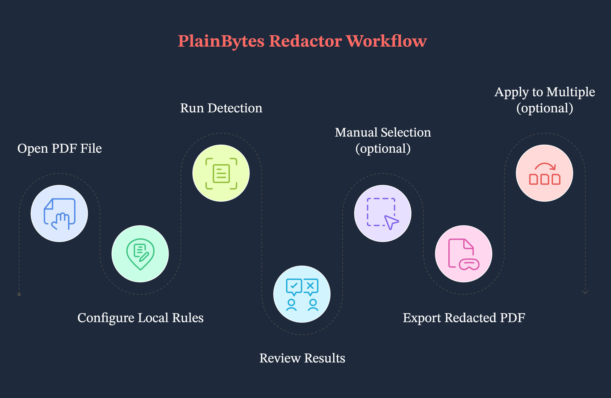
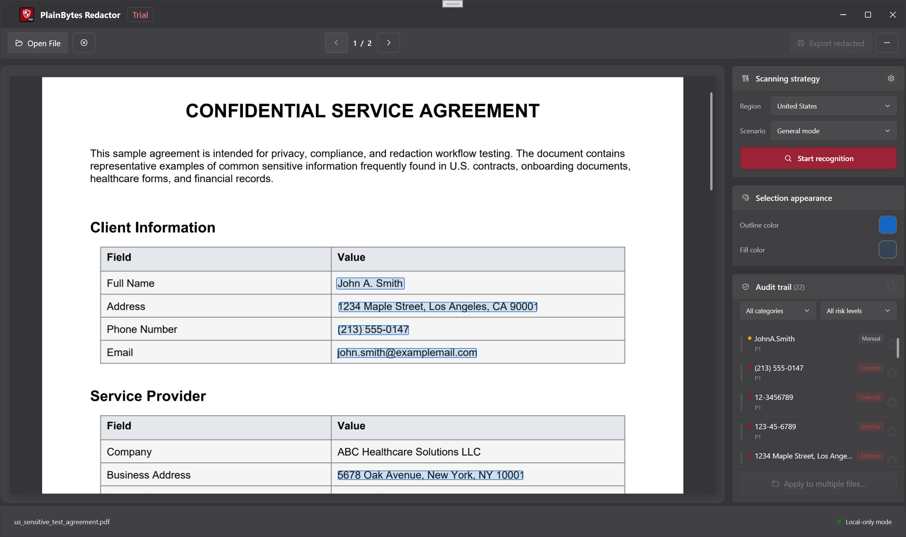

Written for the current Windows desktop app. If anything here disagrees with the build you have installed, trust the in-app UI.
1. What this app is for
1.1 True redaction vs. draw-over preview
These two approaches mean very different things for compliance and security:
Aspect
Draw-over preview (the usual “black bar”)
True redaction (what this app aims for)
Inside the PDF
Text, vectors, or images can still be in the file—often just covered by another graphic.
Matching content is removed from the content stream so it isn’t recoverable through normal parsing.
Copy / search
Depending on the tool, “hidden” text might still copy out.
The goal is that selectable text no longer contains the sensitive strings (verify on your exported file).
Best for
On-screen reading or quick cover-ups.
Sharing externally, archiving, audits, diligence—anywhere you need content gone for good.
PlainBytes Redactor is built around true redaction. Use Confirm so you’re clear which areas are actually removed at export.
1.2 What we mean by “local and offline”
Work stays on this PC: opening the PDF, rule matching, writing the redacted file, and validation all run locally.
No document upload for redaction: the product isn’t designed to ship your files to the cloud as part of the redaction pipeline.
Separate from Help / updates: when you open Help, Check for updates, and similar menu items, Windows may launch your browser or the Microsoft Store. That’s unrelated to keeping the redaction path offline.
1.3 When it’s a good fit
Workflows in legal, finance, healthcare, public sector, or audit where you want human review and a smaller blast radius for leaks.
You need to hand out a PDF but strip IDs, account numbers, contact details, and other identifying bits.
You have many PDFs with the same layout: after confirming on one “template” file, you can use Apply to multiple files to reuse the same geometry on the rest (see Step G in §3 and §9).
2. Core ideas
2.1 Redaction marks (RedactionMark)
Internally, each area you might redact is a redaction mark—think “a rectangle on a page plus metadata”:
Page and rectangle: position and size in PDF coordinates.
State: Pending vs. Confirmed—only confirmed marks are removed when you export.
Source: Rules (patterns/regex) or manual selection, so you can tell auto hits from things you drew.
Category and risk: used to filter, sort, and bulk-act in the audit list.
2.2 What “confirm” means—and why it’s manual
Automation isn’t the final say: rule matching can over-flag normal text or miss real sensitive bits, so the app never assumes “everything found should be deleted.”
Confirm = you’re signing off: once confirmed, a mark is included in the export set; anything left pending is not treated as final.
Fits real-world review: the extra step lines up with two-person review, audit trails, and avoiding one-click wipe of a whole page by mistake.
2.3 The batch baseline
There’s no “save this as a named template file and pick it later” flow. What batch uses is an in-memory geometric baseline: when you go to batch via Apply to multiple files, the app turns every confirmed mark on the current document into a normalized rectangle (page + coordinates relative to page size) for that batch session only.
For each queued PDF, the batch engine only stamps those rectangles—it does not run a fresh full-document rule pass per file.
When that’s OK: multiple exports from the same system with the same layout and sensitive regions in the same places (e.g. uniform statements). If layouts drift, boxes can land on the wrong spot—spot-check early outputs.
Rules in the hub: they help you find hits on the current single-file workflow; they are not automatically re-run for every file in the queue. Batch is driven by the confirmed positions you already locked in.
3. End-to-end workflow
Walkthrough setup
In this example, a legal reviewer has an 8-page employee offboarding PDF to release externally. They need mobile numbers, partial bank-card snippets, and personal email addresses removed. The file is a real electronic PDF with selectable text (not a flat scan).

Workflow at a glance
Step A: Open the document
Use Open or drag-and-drop to load the PDF (common image formats are also supported; the path through the app may differ).
Everything—preview, detection, and marks—is tied to this one source file, so open the version you actually intend to redact.
Step B: Pick region and scenario in the rules hub
Open Rules, choose a region (country/area), then a business scenario (general, financial, etc.). Turn built-in rules on or off, or add custom ones if needed.
The effective rule set changes with region and scenario; picking the wrong scenario can leave useful rules off or invite extra noise. You can save preferences before closing so the next similar doc is quicker.
Step C: Run detection
On the right, under scan policy, click Start detection (or the equivalent control) and let the document model and full pass finish.
That turns rule hits into a list of pending marks. If you change region, scenario, or rules, run detection again so the list matches.
Step D: Review in the audit list
In the audit trail on the right, walk items one by one or use filters. Confirm what must go; clear confirmation or remove rows for false positives (exact controls depend on the build). The yellow overlays in preview usually stay in sync—clicking can toggle confirm state.
This step is what keeps you from deleting the wrong thing or leaving something behind; export only honors confirmed marks.
Step E: Draw boxes for anything missed
Drag rectangles on the left-hand preview over anything rules didn’t catch but you know must be redacted. Adjust selection colors if it helps on busy backgrounds.
Auto detection won’t catch everything; manual boxes are your safety net.
Step F: Export
Choose Export redacted, pick a save location, and read the completion summary (how many items removed, metadata cleanup, validation messages).
You get a share-ready copy; the summary is a quick sanity check—if it flags warnings, open the exported PDF and spot-check.
Step G (optional): Apply to multiple files
After everything that should be redacted is confirmed on this PDF, use Apply to multiple files (or the equivalent entry). The app builds the normalized baseline described above and opens batch redaction. Add more PDFs with matching layout, set an output folder, choose whether to strip metadata, and run.
When layouts truly match, you avoid redoing the same confirmations file by file; batch still physically removes the boxed regions. Important: this isn’t a reusable named template on disk—there’s no separate template file; the baseline comes from this confirmed document. Batch also doesn’t re-run rule detection per queued file. If a file’s layout changed, go back through the single-file flow.
4. Main window tour

Main window
4.1 Preview (left)
What it’s for: renders each page of the PDF (or image) so page numbers and layout match the file.
Marks: auto and manual pending areas show as highlights; clicking a region often toggles confirm state together with the list (yellow cueing depends on the build).
Manual boxes: click-drag on the preview to add a rectangular mark.
4.2 Scan policy panel
What it’s for: entry point for running detection (e.g. Start detection), aligned with region, scenario, and rule sets from the hub.
Why it’s separate: keeps “when to scan the whole doc” distinct from “how to work the audit list,” which reduces confusion.
4.3 Selection appearance
What it’s for: tweak how manual selections look—border, fill, custom colors—so boxes stay visible on noisy backgrounds.
Heads-up: this is visual help only; redaction still depends on confirmation and export.
4.4 Audit trail list
What it’s for: aggregated sensitive hits for the open document, with filters by category and risk, plus per-row or bulk confirm/clear actions.
Sync with preview: selecting or acting on a row usually scrolls/highlights the page; clicking a mark in preview updates list state.
4.5 Toolbar (top to bottom)
Open: pick a local PDF or supported image.
Close document: closes the current file.
Previous / Next page: use the toolbar—Page Up / Page Down on the single-file page are handled separately for preview scrolling (see §7.3).
Rules: opens the rules hub.
Batch: opens batch redaction.
Export redacted: available when there are confirmed marks.
More (⋯): language, Help, feedback, updates, About, etc.
The status bar shows readiness and the current file name, among other hints.
5. Rules hub
5.1 Region and business scenario
Region: country/area flavor—drives which built-in patterns apply (ID formats, phone rules, etc.).
Business scenario: narrows or emphasizes rule bundles (general, financial, healthcare, legal/government) so defaults fit the document type.
Together: set region first, then scenario; after changes, run detection again or you may still be looking at an old pass.
5.2 Built-in vs. custom rules
Built-in: shipped with the app, grouped (identity, finance, address, contact, …), toggle per rule, backed by local data—fully offline.
Custom: your label plus a pattern—plain substring (case-insensitive) or .NET regular expression. Handy for internal codes the built-ins don’t know. There may be a cap on how many you can add.
5.3 When to adjust rules
Too much noise: temporarily disable overly broad rules or pick a closer scenario.
Same pattern keeps appearing and nothing built-in matches: add a custom rule to cut down manual boxing.
Config drift: Restore defaults clears local overrides (you’ll be asked to confirm).
6. Audit sidebar
6.1 Why confirmation works this way
A row often groups multiple occurrences of the same sensitive type or key across pages; confirming it means you’re saying all of those spots should be removed.
Pending keeps “model guess” separate from “human decision,” so nothing is bulk-written without review.
The export engine consumes confirmed marks only—by design.
6.2 Filters and bulk confirm
Filter: narrow by category or risk so you tackle high-risk or one field type first (e.g. contact only).
Bulk: flip confirm state for everything visible under the current filter (wording depends on the build)—handy when a whole slice is clearly right or clearly wrong.
Tip: glance at the active filter before a bulk action so you don’t sweep in rows you didn’t mean to.
6.3 Risk levels
Levels (e.g. critical, high, suspicious, medium, low) help you sort and filter so the riskiest hits surface first. They are not a mandate to confirm—you still decide what to redact.
7. Manual selections
7.1 When to draw your own boxes
Rules missed something you know must go—handwritten photo annotations, odd layout pockets, etc.
Hits are fragmented or misaligned: remove the bad auto rows and draw a tighter box.
Scan-only content handled as imagery: behavior differs from text PDFs; you’ll often lean on manual boxes (see FAQ).
7.2 Working with auto-detected marks
A practical order: run detection → use the audit list to clear obvious false positives and notice patterns → add a few manual boxes for real misses → skim the preview page by page. Manual and automatic marks are treated the same at export time—what matters is whether they’re confirmed.
7.3 Keyboard shortcuts (preview & marks)
While the single-file page is loaded, it hooks the main window’s PreviewKeyDown. The shortcuts below apply only with a document open and the app not busy. They are not wired to the toolbar previous/next page buttons.
Key
Action
Tab
Next redaction mark.
Shift + Tab
Previous redaction mark.
←↑→↓
With no modifiers: ←↑ previous mark, →↓ next. With any modifier held: only ↑↓ nudge preview scroll by a fixed step; ←→ are not handled in that branch.
Enter
No modifiers: toggle confirm on the selected mark.
Delete
No modifiers: remove the selected mark.
Page Up / Page Down
Scroll the preview stack by about one viewport height.
Home / End
Jump preview scroll to top / bottom.
8. Export
8.1 Pre-export checklist
This is the file you mean to release (page count, attachments) checked.
Everything that should be redacted is confirmed; anything that must stay is cleared or removed from the list.
You’ve eyeballed key pages in preview, including scans or odd sections you boxed manually.
You know export writes a new file (or your chosen path) and typically doesn’t overwrite the original—behavior follows the save dialog.
8.2 Why strip metadata
Beyond page content, PDFs carry author, producer, timestamps, XMP, and more. Redacting body text but leaving metadata can still leak internal accounts or edit history. This app can scrub that on export (and optionally in batch). For anything leaving the building, it’s usually best to leave metadata cleanup on when the UI offers it.
8.3 Reading the summary
Does the count of physically removed items feel right for what you saw?
Does it say metadata was cleared?
If you see text validation warnings, automated sampling found something odd—open the exported PDF and check; don’t treat the summary alone as proof of zero residue.
9. Batch processing
9.1 What batch mode actually does
After you enter through Apply to multiple files with a baseline, each queued PDF follows a stamp-only path: normalized rectangles are mapped to absolute coordinates per page, marks are created, content is physically removed, and metadata can optionally be cleared. It does not run rule detection again per file.
So the rules you used in single-file mode helped you find and confirm on the template; batch simply copies where you confirmed onto other files that share the same geometry.
9.2 Good use cases
Many PDFs from one system with the same layout and sensitive regions in the same relative positions.
You already finished detection and confirmation on one exemplar and want to skip repeating that work on near-identical copies.
9.3 Things to watch
No saved template file: closing the batch window drops the in-memory baseline; next time, seed it again from Apply to multiple files.
Opening Batch from the toolbar without that path may leave you without a baseline—Start might stay disabled.
Small layout shifts can mean missed or wrong regions; spot-check first outputs.
Turn on clear properties and hidden data when offered for external sharing.
Some document types or license tiers may limit batch; if Apply to multiple files is greyed out, that’s the signal.
10. FAQ
10.1 Why are there so many false positives?
Rule matching leans on patterns and heuristics: strings that look sensitive, place names colliding with person names, table fragments, and so on. Tuning scenario/rules, turning off a noisy rule, or clearing confirmation in the list usually gets it under control. Manual confirmation is intentional—it lowers the odds of one-click deleting something you still need.
10.2 What about scanned PDFs?
If the PDF is effectively a page image with no real text layer, rule detection has less to work with, so you’ll lean more on manual boxes or whatever raster-specific flow the build exposes (follow on-screen hints). It helps to know whether you’re dealing with a born-digital PDF or a scan up front.
10.3 Can I redact images? Why isn’t text in photos recognized?
Yes—common image formats can be opened like a document; you still preview, mark, and export. To keep installer size and runtime cost reasonable, this version doesn’t ship OCR: text in photos doesn’t become selectable, so rule-based detection barely applies. Redact sensitive areas by drawing boxes (and using keyboard shortcuts to move between marks). If you need “recognize then match,” OCR elsewhere first or supply a text-layer PDF.
10.4 How do I sanity-check an export?
In any PDF reader, try select all / copy and search for strings you know were sensitive.
Visually scan headers, footers, footnotes.
Read the app’s export validation summary; if it warns, revisit those pages first.
For very high stakes, layer your org’s usual controls—second tool, print review, etc.